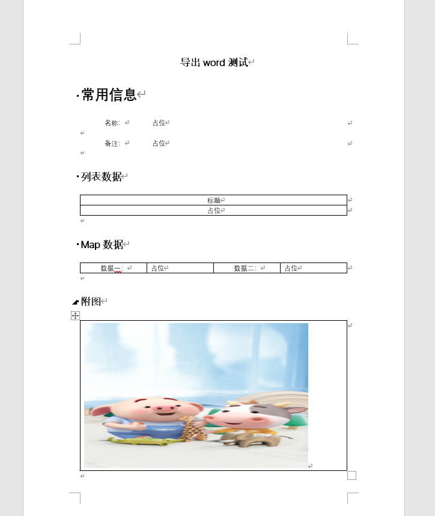
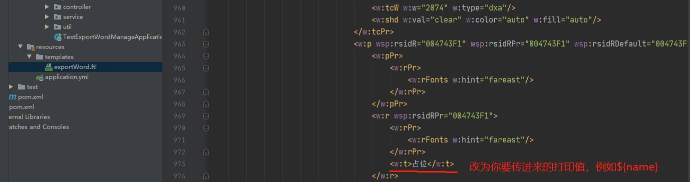
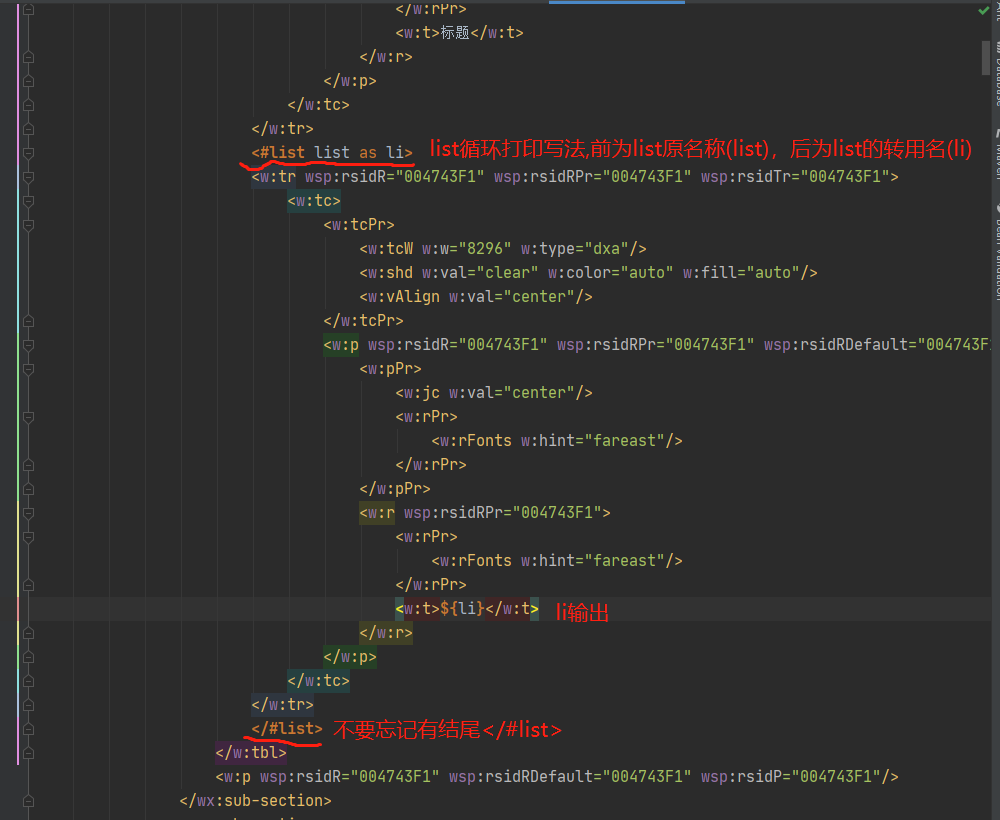
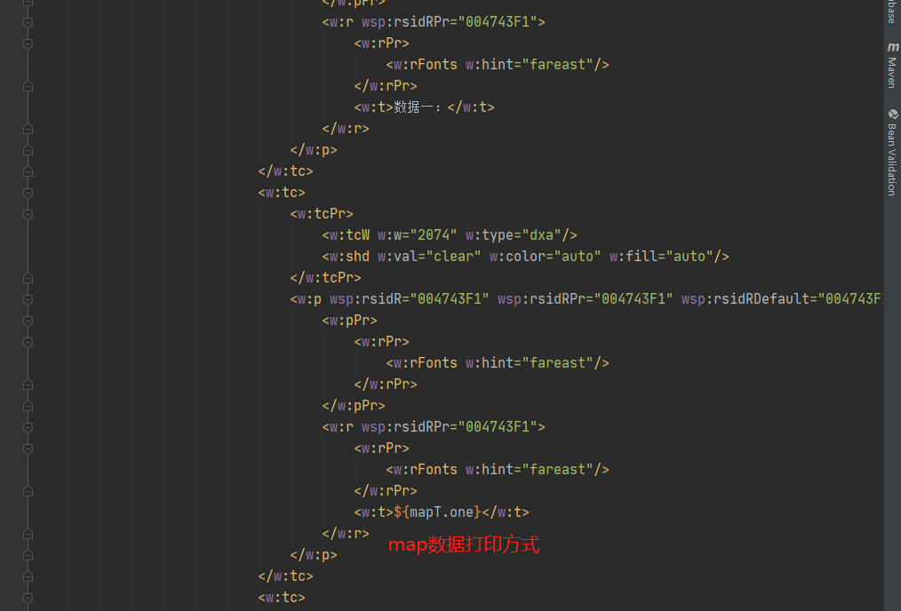
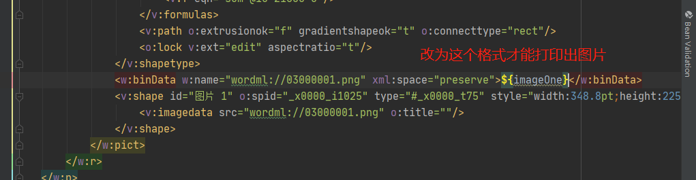
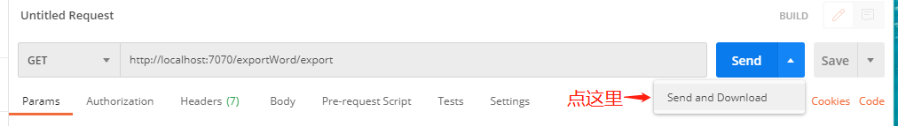
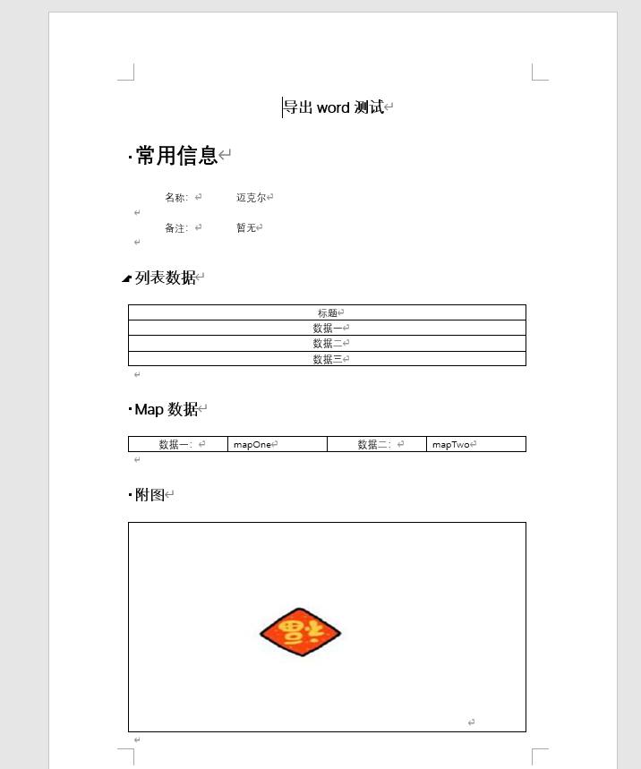

sprinboot使用freemarker导出word文档过程记录
简介
本文为springboot使用freemarker技术导出word文档的过程记录。
内容
1、代码部分
springboot项目创建
开发工具：idea
java版本：java8
springboot版本：2.1.6.RELEASE
创建一个maven项目，项目名称自定义，例如：ssqxx-word
创建完父类项目之后，删除生成的java文件夹和resources文件夹，新建一个子模块，模块命名自定义，例如：test-export-word-manage
springboot导包
父类pom文件：
1
2
3
4
5
6
7
8
9
10
11
12
13
14
15
16
17
18
19
20
21
22
23
24
25
26
27
28
29
30
31
32
33
34
35
36
37
| <?xml version="1.0" encoding="UTF-8"?>
<project xmlns="http://maven.apache.org/POM/4.0.0"
xmlns:xsi="http://www.w3.org/2001/XMLSchema-instance"
xsi:schemaLocation="http://maven.apache.org/POM/4.0.0 http://maven.apache.org/xsd/maven-4.0.0.xsd">
<modelVersion>4.0.0</modelVersion>
<groupId>org.example</groupId>
<artifactId>ssqxx-word</artifactId>
<packaging>pom</packaging>
<version>1.0-SNAPSHOT</version>
<description>导出word测试项目</description>
<modules>
<module>test-export-word-manage</module>
</modules>
<properties>
<springboot.version>2.1.6.RELEASE</springboot.version>
</properties>
<dependencyManagement>
<dependencies>
<dependency>
<groupId>org.springframework.boot</groupId>
<artifactId>spring-boot-dependencies</artifactId>
<version>${springboot.version}</version>
<type>pom</type>
<scope>import</scope>
</dependency>
</dependencies>
</dependencyManagement>
</project>
|
模块pom文件：
1
2
3
4
5
6
7
8
9
10
11
12
13
14
15
16
17
18
19
20
21
22
23
24
25
26
27
28
29
30
31
32
33
34
35
36
37
38
39
40
41
42
43
| <?xml version="1.0" encoding="UTF-8"?>
<project xmlns="http://maven.apache.org/POM/4.0.0"
xmlns:xsi="http://www.w3.org/2001/XMLSchema-instance"
xsi:schemaLocation="http://maven.apache.org/POM/4.0.0 http://maven.apache.org/xsd/maven-4.0.0.xsd">
<parent>
<artifactId>ssqxx-word</artifactId>
<groupId>org.example</groupId>
<version>1.0-SNAPSHOT</version>
</parent>
<modelVersion>4.0.0</modelVersion>
<artifactId>test-export-word-manage</artifactId>
<build>
<plugins>
<plugin>
<groupId>org.apache.maven.plugins</groupId>
<artifactId>maven-compiler-plugin</artifactId>
<configuration>
<source>8</source>
<target>8</target>
</configuration>
</plugin>
</plugins>
</build>
<dependencies>
<dependency>
<groupId>org.springframework.boot</groupId>
<artifactId>spring-boot-starter-web</artifactId>
</dependency>
<dependency>
<groupId>org.springframework.boot</groupId>
<artifactId>spring-boot-starter-freemarker</artifactId>
</dependency>
<dependency>
<groupId>org.apache.avalon.framework</groupId>
<artifactId>avalon-framework-api</artifactId>
<version>4.3.1</version>
</dependency>
</dependencies>
</project>
|
核心导出代码
创建一个word导出工具类，导出word的所有步骤代码都放在这个类里
WordUtil.java
1
2
3
4
5
6
7
8
9
10
11
12
13
14
15
16
17
18
19
20
21
22
23
24
25
26
27
28
29
30
31
32
33
34
35
36
37
38
39
40
41
42
43
44
45
46
47
48
49
50
51
52
53
54
55
56
57
58
59
60
61
62
63
64
65
66
67
68
69
70
71
72
73
74
75
76
77
78
79
80
81
82
83
84
85
86
87
88
89
90
91
92
93
94
95
96
97
98
99
100
101
102
103
104
105
106
107
108
109
110
111
112
113
114
115
116
117
118
119
120
121
122
123
124
125
126
127
128
129
130
131
132
133
134
135
136
137
138
139
140
141
142
143
144
145
146
147
148
149
150
151
152
153
154
155
156
157
158
| package com.ssqxx.util;
import freemarker.template.Configuration;
import freemarker.template.Template;
import sun.misc.BASE64Encoder;
import javax.servlet.ServletOutputStream;
import javax.servlet.http.HttpServletRequest;
import javax.servlet.http.HttpServletResponse;
import java.io.*;
import java.net.URLEncoder;
import java.text.SimpleDateFormat;
import java.util.Date;
import java.util.Map;
public class WordUtil {
private static Configuration configuration = null;
private static final String templateFolder = com.ssqxx.util.WordUtil.class.getResource("/templates").getPath();
static {
configuration = new Configuration();
configuration.setDefaultEncoding("utf-8");
try {
configuration.setDirectoryForTemplateLoading(new File(templateFolder));
} catch (IOException e) {
e.printStackTrace();
}
}
private WordUtil() {
throw new AssertionError();
}
public static void exportMillCertificateWord(HttpServletRequest request, HttpServletResponse response, Map map, String title, String ftlFile) throws IOException {
Template freemarkerTemplate = configuration.getTemplate(ftlFile);
File file = null;
InputStream fin = null;
ServletOutputStream out = null;
try {
file = createDoc(map, freemarkerTemplate);
fin = new FileInputStream(file);
response.setCharacterEncoding("utf-8");
response.setContentType("application/msword");
SimpleDateFormat sdf = new SimpleDateFormat("yyyy-MM-dd");
String fileName = title + sdf.format(new Date()) + ".doc";
String encodedFileName = fileName +";filename*=utf-8''"+URLEncoder.encode(fileName,"UTF-8");
response.setHeader("Content-Disposition", "attachment;filename="+encodedFileName+"");
response.setContentType("application/vnd.ms-excel;charset=UTF-8");
response.setHeader("Pragma", "no-cache");
response.setHeader("Cache-Control", "no-cache");
response.setDateHeader("Expires", 0);
out = response.getOutputStream();
byte[] buffer = new byte[512];
int bytesToRead = -1;
while ((bytesToRead = fin.read(buffer)) != -1) {
out.write(buffer, 0, bytesToRead);
}
} finally {
if (fin != null) fin.close();
if (out != null) out.close();
if (file != null) file.delete();
}
}
private static File createDoc(Map dataMap, Template template) {
String name = "ssqxx.doc";
File f = new File(name);
Template t = template;
try {
Writer w = new OutputStreamWriter(new FileOutputStream(f), "utf-8");
t.process(dataMap, w);
w.close();
} catch (Exception ex) {
ex.printStackTrace();
throw new RuntimeException(ex);
}
return f;
}
public static String getImageBase(String src){
if (src == null || src == "")
return "";
File file = new File(src);
if (!file.exists())
return "";
InputStream in = null;
byte[] data = null;
try {
in = new FileInputStream(file);
data = new byte[in.available()];
in.read(data);
in.close();
} catch (IOException e) {
e.printStackTrace();
}
BASE64Encoder encoder = new BASE64Encoder();
return encoder.encode(data);
}
public static String getImageBaseByInputStream(InputStream inputStream){
if (inputStream == null)
return "";
byte[] data = null;
try {
data = new byte[inputStream.available()];
inputStream.read(data);
inputStream.close();
} catch (IOException e) {
e.printStackTrace();
}
BASE64Encoder encoder = new BASE64Encoder();
return encoder.encode(data);
}
}
|
业务导出代码
controller层
1
2
3
4
5
6
7
8
9
10
11
12
13
14
15
16
17
18
19
20
21
22
23
24
25
26
27
28
29
30
31
32
33
34
| package com.ssqxx.controller;
import com.ssqxx.service.ExportWordService;
import org.springframework.beans.factory.annotation.Autowired;
import org.springframework.web.bind.annotation.GetMapping;
import org.springframework.web.bind.annotation.RequestMapping;
import org.springframework.web.bind.annotation.RestController;
import javax.servlet.http.HttpServletRequest;
import javax.servlet.http.HttpServletResponse;
@RestController
@RequestMapping("exportWord")
public class ExportWordController {
@Autowired
ExportWordService exportWordService;
@GetMapping("export")
public void exportWord(HttpServletRequest request, HttpServletResponse response){
exportWordService.exportWord(request,response);
}
}
|
服务层
sevice类
1
2
3
4
5
6
7
8
9
10
11
12
13
14
15
16
17
| package com.ssqxx.service;
import javax.servlet.http.HttpServletRequest;
import javax.servlet.http.HttpServletResponse;
public interface ExportWordService {
void exportWord(HttpServletRequest request, HttpServletResponse response);
}
|
service实现类
1
2
3
4
5
6
7
8
9
10
11
12
13
14
15
16
17
18
19
20
21
22
23
24
25
26
27
28
29
30
31
32
33
34
35
36
37
38
39
40
41
42
43
44
45
46
47
48
49
50
51
52
53
54
| package com.ssqxx.service.impl;
import com.ssqxx.service.ExportWordService;
import com.ssqxx.util.WordUtil;
import org.springframework.stereotype.Service;
import javax.servlet.http.HttpServletRequest;
import javax.servlet.http.HttpServletResponse;
import java.io.IOException;
import java.util.LinkedList;
import java.util.List;
import java.util.HashMap;
import java.util.Map;
@Service("exportWordService")
public class ExportWordServiceImpl implements ExportWordService {
@Override
public void exportWord(HttpServletRequest request, HttpServletResponse response){
Map map = new HashMap();
map.put("name","迈克尔");
map.put("remark","暂无");
List list = new LinkedList();
list.add("数据一");
list.add("数据二");
list.add("数据三");
map.put("list",list);
Map mapT = new HashMap();
mapT.put("one","mapOne");
mapT.put("two","mapTwo");
map.put("mapT",mapT);
String imageOne = WordUtil.getImageBase("C:/U***s/1****3/D*****p/微信图片_20200915162314.jpg");
map.put("imageOne", imageOne);
try {
WordUtil.exportMillCertificateWord(request,response,map,"导出word测试","exportWord.ftl");
} catch (IOException e) {
e.printStackTrace();
}
}
}
|
模块配置文件
1
2
3
4
5
| server:
port: 7070
spring:
application:
name: export-word-manage-service
|
2、模板部分
模板创建
- 使用WPS或者微软word进行模板编制
- 写好模板样式，最后在需要填充数据的地方写上标识，方便之后改成导出模板，例如：“占位”来作为标识
- 模板编制完成后，另存为，保存格式为xml格式！
- 建议插入图片占位时尽量使用较小的图片！
例如：

模板修改
项目的模块部分添加存放模板文件夹，在resources文件夹下新建templates文件夹
将生成好的xml模板，导入到项目模块中新建的templates文件夹里
修改xml模板的文件名，更改为：exportWord.ftl（名称可以自定义，在代码里对应上即可，不然会报错找不到文件！）
打开exportWord.ftl，进行格式的调整和修改（ftl用idea打开格式较乱的话，可以用Notepad++进行xml格式调整，这个操作不会的话，之后的文章会出！）
将模板中“占位”数据更改为传入map的key，例如：${name}

模板中list的数据更改，需要加上<#list 原名 as 作用名></#list>

模板中Map的数据更改，直接写map的值加上key，例如${map.key}

模板中图片打印，先找到<w:binData></w:binData>，然后将中间的Base64位字符删除，更换为自己的数据名称，注意格式，不可以换行，否则图片打印不出来。例如${image}

3、导出效果
完成以上步骤之后，就可以进行word导出测试了，我使用postman进行导出接口测试

最终的效果为

数据都已经打印出来了，图片也成功展示，word导出完成！
结论
word导出的开发过程记录是在工作中项目需要用到word导出这个功能，然后去学习和寻找方法的，其实关键的地方在于模板的编制和导出核心代码。
这就是一个简单的springboot使用freemarker进行word文件导出的开发过程记录，希望能给你们的开发提供一些些帮助！
谢谢支持！